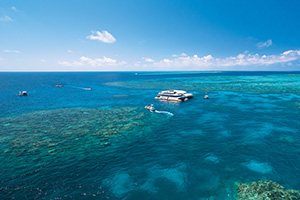
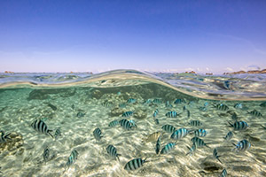
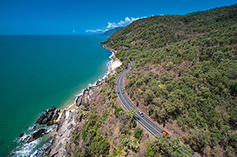
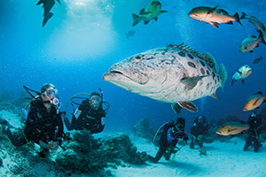
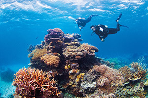
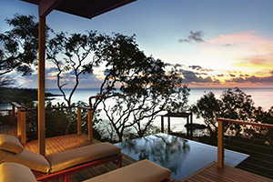
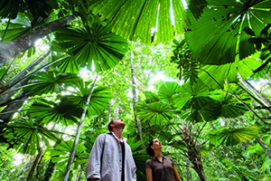
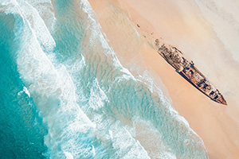
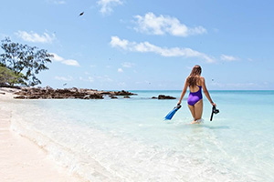

YOUR ULTIMATE
72-HOUR TROPICAL NORTH QUEENSLAND TRAVEL GUIDE

I spoke to a friend recently (25, going through a quarter-life crisis) who was equal parts shocked and disappointed that they'd never seen the Great Barrier Reef.
Read MoreTROPICAL ISLAND 101: YOUR GUIDE TO DISCOVERING QUEENSLAND'S ISLANDS
Whether you're after soft silica sand or isolated coral cays with easy access to the reef, we've got over 900 islands ready to be explored.
Read MoreADD THE GREAT BARRIER REEF DRIVE TO YOUR ROAD TRIP BUCKET LIST
When you start to think about iconic road trips around the world, there is some pretty mindblowing scenery to take in.
Read More100 THINGS TO DO ON THE GREAT BARRIER REEF
They don’t call it great for nothing! One of the original seven natural wonders of the world, the Great Barrier Reef is pretty much its own underwater country, covering around 135,000 square miles.
Read More10 WAYS TO EXPLORE TWO WORLD HERITAGE SITES FROM CAIRNS
Cairns is a bucket list destination for many, with its gourmet foodie spots, adrenaline-filled adventures and relaxed lifestyle. Venture out of the city though, and there are two World Heritage sites to explore.
Read More10 WAYS TO DO THE GREAT BARRIER REEF IN THE WHITSUNDAYS
Sitting pretty at the beating heart of the Great Barrier Reef you’ll find the 74 islands of The Whitsundays. We know, that’s a lot of reef-tastic space to cover.
Read More10-DAY WILD NORTH QUEENSLAND ITINERARY CAIRNS TO COOKTOWN
This 10-day Tropical North Queensland road trip itinerary showcases the best of the World Heritage sites on offer, from the reef to the rainforest, and the rugged Wild North.
Read MoreHOW TO CONQUER THE DAINTREE RAINFOREST IN 4 DAYS
Millenials may well consider anything that predates the 1980s ‘ancient’, but for something more than 100 million years old, look no further than the World Heritage-listed Daintree Rainforest.
Read More48 HOURS ON FRASER ISLAND
Affectionately known as K’gari (paradise) by the Butchulla people, Fraser Island is 75 miles of natural beauty, rich in history and adventure. Home to breathtaking beauty spots like rainforests, sand blows, freshwater lakes and a pristine beach.
Read MoreTHE BEST ISLAND TO VISIT ON THE SOUTHERN GREAT BARRIER REEF
If you want to know the best islands to visit, islands that are home to colourful corals and amazing marine, the Southern Great Barrier Reef is for you.
Read More